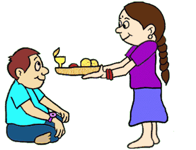

The word ‘Raksha Bandhan’ has a very significant meaning. Raksha means protection and Bandhan means bond. It is the celebration of a chaste bond of love and protection between a Brother and Sister. This Festival symbolizes love and harmony. This occasion comes in August. As per the Hindu calendar, it is celebrated on a full moon day. Typically, this Festival is celebrated by people hailing from the northern and western part of India. This occasion is also called by different names in different parts of the country. Some people call this Festival ‘Rakhi Purnima’, some call it ‘Kajri Purnima’. In many states, this Festival is considered as an important day for farmers and women who have sons. On this occasion, people worship Lord Shiva. As per the tradition, the Sisters prepare a thali or a plate with diya, roli, rice and Rakhis. First, she offers prayers to God and then ties Rakhi to the Brothers and wishes for their well-being. The Brother in turn acknowledges the love with a Promise to be by the Sisters’ side always and gives her a Gift as a token of love.
